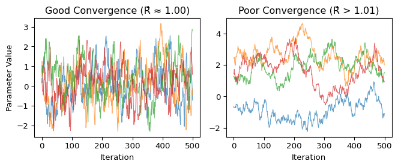
10 Practical Bayesian Inference via Probabilistic Programming
10.1 Learning Objectives
After completing this chapter, you will be able to:
- Build and run Bayesian models using modern software tools, translating mathematical models into working code via probabilistic programming languages such as PyMC or Stan.
- Check if your results are reliable by recognising the signs that sampling has failed, and what to do when it has.
- Work with different types of data including continuous measurements and categorical outcomes.
- Compare different models to see which one better explains your data.
- Understand the practical workflow of Bayesian analysis: from specifying priors to checking results.
Note
This chapter brings Bayesian inference to life through practical computation. While previous chapters established the theoretical foundations of Bayesian methods, here we’ll see how modern probabilistic programming makes these ideas accessible and powerful. The PyMC library for Python is our primary tool, with optional Stan references in R for those already familiar with it.
10.2 Introduction: Why Probabilistic Programming?
10.2.1 Motivation: Bayesian Inference in the Real World
In 2016, the LIGO team announced a stunning discovery: they had detected gravitational waves from colliding black holes, confirming a century-old prediction by Einstein. The detection itself was remarkable – finding a tiny wobble in space-time buried in overwhelming noise. But once they knew something was there, an equally challenging question arose: what exactly had they observed? What were the masses of the black holes? How far away were they? Where in the sky did the merger occur?
This is where Bayesian inference became essential. The team couldn’t just give single “best guess” answers – they needed to quantify their uncertainty about each property by computing the posterior distribution. This mirrors what we saw in Chapter 8 with the search for Air France Flight 447, where Bayesian methods succeeded by combining multiple uncertain sources of information rather than relying on any single piece of evidence. Similarly, for LIGO, using Bayesian methods allowed them to say things like “we’re 90% confident the total mass was between 60 and 70 solar masses” rather than just “the mass was 65 solar masses.”
The LIGO team used specialized inference software developed over many years specifically for gravitational wave astronomy. But here’s the key insight: the same fundamental challenges they faced – combining uncertain information, quantifying confidence in conclusions, handling complex models that do not admit closed-form solutions – appear everywhere in modern data science.
While it used to be the case, it’s not very efficient for every researcher to spend years building custom inference software for their specific problems. That’s where general-purpose probabilistic programming tools come in. They let us tackle similarly complex problems whether we’re:
- Aggregating opinion polls to predict election outcomes (like The Economist’s 2020 US presidential forecast, written in Stan by The Economist together with the statisticians Andrew Gelman and Merlin Heidemanns)
- Analyzing genomic data to identify bacterial strains in microbiome studies
- Detecting anomalies in sensor networks or financial transactions
- Personalizing recommendations while quantifying uncertainty
In all these problems, we need methods that can handle complex models with dozens or even thousands of parameters, incorporate prior knowledge, and – crucially – tell us how uncertain the results are. The promise of probabilistic programming tools is to allow the researcher to focus on defining the model, and the machinery should automatically take care of the inference.1
10.2.2 From Models to Inference
The gap between statistical theory and practice used to be enormous. Suppose you write down a Bayesian model on paper:
\begin{aligned} \text{Prior: } & \theta \sim \pi(\theta) \\ \text{Likelihood: } & X \mid \theta \sim f(X \mid \theta) \\ \text{Posterior: } & \theta \mid X \sim \frac{f(X \mid \theta) \pi(\theta)}{\int f(X \mid \theta') \pi(\theta') d\theta'} \end{aligned}
How do you solve this? Outside of a few special cases with conjugate priors (like Beta-Binomial or Normal-Normal from Chapter 8), we can’t write down a formula for the posterior distribution.
So how do we actually do Bayesian inference in practice? One common solution is that we don’t compute the posterior distribution directly – we draw samples from it. Using algorithms like Markov Chain Monte Carlo (MCMC), we generate hundreds or thousands of samples \theta_1, \theta_2, \ldots, \theta_m that, collectively, represent the posterior distribution.
Samples are Practical Representations of Distributions
Samples are a very convenient way of representing a probability distribution, whether discrete or continuous. Computing any statistic via samples is straightforward:
- the mean is
np.mean(samples) - a 95% credible interval is
np.percentile(samples, [2.5, 97.5]) - p(\theta > 0) is just
np.mean(samples > 0) - the distribution of some complex function g(\theta) is
g(samples)
The tradeoff is clear: we lose analytical precision but gain computational flexibility.
This is the key insight of practical Bayesian inference: we approximate the posterior through samples rather than computing it exactly. But implementing MCMC correctly used to require deep expertise – you needed to code your own sampler, tune it properly, and verify convergence. If you got any of these steps wrong, your results would be unreliable.
Probabilistic programming makes this much more accessible. With tools like PyMC or Stan, you write your model in code that mirrors the mathematical notation:
with pm.Model() as model:
# Prior
theta = pm.Normal("theta", mu=0, sigma=1)
# Likelihood
x = pm.Normal("x", mu=theta, sigma=1, observed=data)
# Inference happens automatically!
trace = pm.sample()# Model specification (in .stan file)
model {
theta ~ normal(0, 1); // Prior
x ~ normal(theta, 1); // Likelihood
}
# In R:
fit <- stan(file="model.stan", data=list(x=data))The system handles all the computational heavy lifting: computing gradients, tuning samplers, running diagnostics, and producing posterior samples. Ideally, you can focus on the science, not the numerical methods.
10.2.3 Practical Bayesian Inference via PyMC
This chapter teaches practical Bayesian inference through PyMC, the leading probabilistic programming framework in Python. We chose PyMC because it:
- Integrates seamlessly with the Python scientific stack (NumPy, Pandas, Matplotlib)
- Provides state-of-the-art MCMC samplers like NUTS (No-U-Turn Sampler) that work well on complex models
- Includes comprehensive diagnostics to ensure your results are reliable
- Scales from simple examples to production models with thousands of parameters
- Runs on fast modern backends: the same model can be sampled by samplers built on JAX or Numba by changing one argument, and JAX also runs on GPUs
Stan is the other widely used tool, with a vibrant developer and user community and a long track record. A Stan model is written in Stan’s own modeling language and compiled to C++, which makes it fast but adds a second language and a compilation step to the workflow. A PyMC model is ordinary Python code, which makes PyMC easier to pick up for data scientists already working in Python. Speed used to be the main argument for Stan, and the JAX- and Numba-based samplers have narrowed that gap.2
Faster Sampling With JAX and Numba (Optional)
PyMC’s default sampler is written in Python, which is plenty for the models in this chapter: each one samples in seconds. For large models, pm.sample() can hand the model to a sampler compiled with another backend:
with model:
# Any one of:
idata = pm.sample(nuts_sampler="nutpie") # Numba backend
idata = pm.sample(nuts_sampler="numpyro") # JAX backend, CPU or GPU
idata = pm.sample(nuts_sampler="blackjax") # JAX backend, CPU or GPUEach option needs its package installed (nutpie, numpyro or blackjax). In the PyMC example Faster Sampling with JAX and Numba, all three are about three to four times faster than the default sampler on a moderately sized model.
Stan Quick Reference (Optional)
For readers familiar with Stan, we include Stan equivalents in secondary tabs and collapsed sections like this one. They’re completely optional.
Finnish Terminology Reference
For Finnish-speaking students, here’s a reference table of key terms in this chapter:
| English | Finnish | Context |
|---|---|---|
| Bayesian inference | Bayesiläinen päättely | Main inferential framework |
| Prior distribution | Priorijakauma | Beliefs before seeing data |
| Posterior distribution | Posteriorijakauma | Updated beliefs after data |
| Markov Chain Monte Carlo (MCMC) | Markovin ketju Monte Carlo | Sampling from the posterior |
| Convergence | Konvergenssi | Chains have reached the target distribution |
| Trace plot | Jälkikuvaaja | Visual convergence check |
| Credible interval | Uskottavuusväli | Bayesian interval estimate |
| Predictive distribution | Ennustejakauma | Distribution of new observations |
| Model comparison | Mallien vertailu | Choosing between candidate models |
| Marginal likelihood | Marginaaliuskottavuus | Evidence for a model |
| Bayes factor | Bayes-kerroin, Bayes-tekijä | Ratio of marginal likelihoods |
| Cross-validation | Ristiinvalidointi | Estimating predictive performance |
| Leave-one-out cross-validation | Yksi-pois-ristiinvalidointi | CV with one held-out point |
10.3 MCMC Foundations and Diagnostics
10.3.1 MCMC Basics
As we mentioned earlier, practical Bayesian inference hinges on a simple but powerful idea: instead of computing integrals analytically (usually impossible), we draw samples from the posterior distribution and use those samples to approximate any quantity we need.
We primarily obtain these samples using Markov Chain Monte Carlo (MCMC). MCMC is not a single algorithm, but a broad family of different methods that allow us to sample from a target probability distribution \pi(\theta), provided its unnormalized density.
The Target: Unnormalized Posteriors
Our goal is to sample from the posterior distribution:
f(\theta \mid x^n) = \frac{f(x^n \mid \theta) f(\theta)}{\int f(x^n \mid \theta) f(\theta) d\theta}
The denominator – the marginal likelihood – is typically intractable. But here’s the fundamental point: MCMC methods only need the unnormalized posterior:
f(\theta \mid x^n) \propto f(x^n \mid \theta) f(\theta)
This is exactly what we can compute easily! The likelihood times the prior gives us an unnormalized density that’s proportional to the posterior, and we can feed this to MCMC algorithms.3
Markov Chains: From Local Moves to Global Exploration
MCMC algorithms iteratively construct a stochastic sequence – a Markov chain \theta_1, \theta_2, \ldots, \theta_m – that explores the parameter space. In the chain, each new state depends only on the current state (the Markov property):
\theta_{m+1} \sim p(\theta_{m+1} | \theta_m)
where p(\theta_{m+1} | \theta_m) depends on the transition kernel unique to each MCMC algorithm. Many algorithms use local transitions (close to the current point), but locality is not required and modern methods can efficiently explore far from the current point. This probability distribution is designed following mathematical rules such that the stationary distribution of the produced chain is our target posterior.4
Think of it like a guided random walk through parameter space: the algorithm is built in such a way that it tends to spend more time in high-probability regions (where the posterior is large) and less time in low-probability regions, producing samples that represent the posterior distribution.
In modern implementations, MCMC sampling is typically split into two phases:
- Warm-up/Adaptation (also called burn-in): Starting from an arbitrary point, the algorithm moves toward higher-probability regions, often adjusting its own settings as it goes. We discard these early draws.5
- Sampling: With settings fixed, the chain explores the high-probability region and we keep these draws as our posterior samples.
MCMC Samples Are Correlated
Consecutive MCMC draws are not independent because each step builds on the previous one. This is normal and does not invalidate the correctness of the algorithm, but it means you may need more iterations to get a good picture of the posterior. Use standard diagnostics (built into most libraries) to detect if you have collected enough samples and, if needed, run longer or use more efficient samplers. Even advanced methods still show some correlation for challenging problems.
10.3.2 Convergence and \hat{R}
MCMC algorithms are constructed such that they are mathematically guaranteed to converge in distribution to the target (Chapter 3): as m \to \infty, the distribution of \theta_m approaches \pi(\theta).6 However, this guarantee comes with two critical caveats:
- We can only run for finite time: While convergence is guaranteed asymptotically, in practice we must stop after a finite number of iterations.
- No finite-time proof: For most MCMC algorithms, it’s impossible to prove that convergence has been achieved after any specific number of iterations.
This creates a fundamental challenge: How do we know if our MCMC sampler has converged to the correct distribution? While we can never be completely certain, we can detect when it almost certainly has not converged by running multiple chains and checking whether they’re all exploring the same distribution. The most common diagnostic for this is the \hat{R} statistic.
MCMC tries to generate samples from an unknown probability distribution (the posterior). Since we can’t sample directly, we use a clever trick: we create a random walk that naturally spends more time in high-probability regions and less time in low-probability regions.
But how do we know our random walk has found the right distribution? We run multiple independent walks (chains) starting from different places and check if they all end up with the same behavior:
- All chains visit the same regions with the same frequency → No sign of problems ✓
- Different chains are stuck in different regions or show different
patterns → Not converged ✗
- Some chains are still moving away from their starting points → Still warming up ✗
The key insight: agreement between independent chains is only moderate evidence that sampling went well, since all the chains can miss the same region of the posterior. Disagreement is a clear sign we need to run longer or fix our sampler.
The most common convergence diagnostic is the \(\hat{R}\) statistic (Potential Scale Reduction Factor), which quantifies whether independent chains have converged to the same distribution.
Conceptually, \(\hat{R}\) can be understood as:
\[\hat{R} \approx \sqrt{\frac{\text{Between-chain variance} + \text{Within-chain variance}}{\text{Within-chain variance}}}\]
This is a simplification – modern software computes rank-normalized split-\(\hat{R}\) [@vehtari2021rank], which splits chains, applies rank normalization for robustness, and uses more sophisticated variance estimators. Use library implementations rather than coding this yourself.
For well-converged chains:
- Between-chain variance ≈ Within-chain variance
- Therefore \(\hat{R} \approx 1.0\)
- Practical threshold: \(\hat{R} \leq 1.01\) indicates convergence
Values above 1.01 suggest the chains haven’t fully mixed and are exploring different regions of the parameter space.
In practice, checking convergence involves both numerical diagnostics and visual inspection. Here’s what good versus poor convergence may look like:
The left panel shows an example of converged chains: all four chains quickly found the target distribution and are exploring the same region, creating overlapping “fuzzy caterpillar” patterns. Each chain visits similar values with similar frequency - this is what we want to see.
The right panel shows an example of non-converged chains: they started far apart and haven’t yet found a common distribution. Some chains are stuck in different regions (perhaps different modes), while others are still wandering. These samples are not representative of the true posterior - using them for inference would be misleading!
The key insight: Good convergence shows all chains “agreeing” about the posterior distribution, exploring the same regions with the same frequency.
10.4 Hello, PyMC: Building and Sampling a Simple Model
10.4.1 Defining Probabilistic Models: Joint → Conditional
Let’s understand how probabilistic programming languages represent models. Any joint distribution can be factorized using the chain rule:
f(y_1, \dots, y_n) = f(y_1 \mid y_2, \dots, y_n) \cdot f(y_2 \mid y_3, \dots, y_n) \cdots f(y_n)
This factorization works for any ordering of variables. In practice, we choose an ordering that makes the conditional distributions simple to specify.
For a basic Bayesian model with parameters \theta and data X, the simplest factorization is:
f(\theta, X) = f(X \mid \theta) \cdot f(\theta)
This is the familiar likelihood times prior, which we can express using sampling notation:
\begin{aligned} \theta &\sim f(\theta) && \text{(prior)} \\ X \mid \theta &\sim f(X \mid \theta) && \text{(likelihood)} \end{aligned}
In probabilistic programming, as in Bayesian statistics, there is no fundamental distinction between parameters and data: both are random variables that we represent using this sampling notation. The only difference is that data values are observed (fixed to measured values), while parameter values are unobserved (to be inferred).
The power of probabilistic programming is that this same approach scales to much more complex models – hierarchical structures, time series, mixture models – all using the same basic principle: we describe the generative process, and the system handles the inference.
Normal Distribution Notation For This Chapter
To align with programming libraries and avoid confusion, this chapter uses a different notation than previous chapters for the normal pdf:
- This chapter (programming notation): X \sim \text{Normal}(170, 20) where 20 is the standard deviation.
- Previous chapters (mathematical notation): X \sim \mathcal{N}(170, 20^2) where 20^2 = 400 is the variance.
Throughout this chapter, we use \text{Normal}(\mu, \sigma) to denote a normal distribution with mean \mu and standard deviation \sigma. This matches the parameterization in PyMC, Stan, and most programming languages.
10.4.2 Estimating the Parameters of a Normal Distribution
For a starter, let’s implement the classic conjugate model from Chapter 8: estimating the mean of a normal distribution with known variance. We’ll use real cholesterol data from the Framingham Heart Study. For this example, we’ll work with a random subsample of 30 subjects, which allows us to better visualize the influence of the prior and the uncertainty in our estimates.
Why Use MCMC for a Conjugate Model?
This normal-normal model has a known analytical solution (see Chapter 8). We use it here to demonstrate MCMC because testing computational methods on problems with known solutions is fundamental practice in data science – it lets us verify our tools work correctly before tackling problems where no closed-form solution exists.
Step 1: Data Exploration
First, let’s load and explore cholesterol measurements from the Framingham Heart Study. This famous dataset has tracked cardiovascular health in thousands of participants since 1948. We use the data file from Chapter 9, fram.txt.
import numpy as np
import pandas as pd
import matplotlib.pyplot as plt
# Set random seed for reproducibility
np.random.seed(42)
# Load real data from Framingham Heart Study
# File available here:
# https://lacerbi.github.io/stats-for-ds-website/data/fram.txt
fram_data = pd.read_csv("../data/fram.txt", sep="\t")
chol_data = fram_data['CHOL'].dropna().values
# Take a random sample of 30 observations for our analysis
# We'll use these same 30 throughout the chapter for consistency
sample_size = 30
sample_indices = np.random.choice(len(chol_data), sample_size, replace=False)
y = chol_data[sample_indices]
n = len(y)
# Store these for reuse in the categorical section later
chol_sample_continuous = y.copy()
print(f"Cholesterol data summary (mg/dL):")
print(f" Sample mean: {np.mean(y):.1f}")
print(f" Sample std: {np.std(y, ddof=1):.1f}")
print(f" Sample size: {n}")
print(f" Range: [{y.min():.0f}, {y.max():.0f}]")
# Visualize the data
fig, ax = plt.subplots(figsize=(7, 3))
ax.hist(y, bins=15, alpha=0.7, color='C0', edgecolor='black')
ax.axvline(np.mean(y), color='red', linestyle='--', linewidth=2, label=f'Sample mean: {np.mean(y):.1f}')
ax.set_xlabel('Cholesterol (mg/dL)')
ax.set_ylabel('Count')
ax.set_title('Distribution of Cholesterol in Sample')
ax.legend()
plt.show()Cholesterol data summary (mg/dL):
Sample mean: 247.5
Sample std: 60.5
Sample size: 30
Range: [149, 430]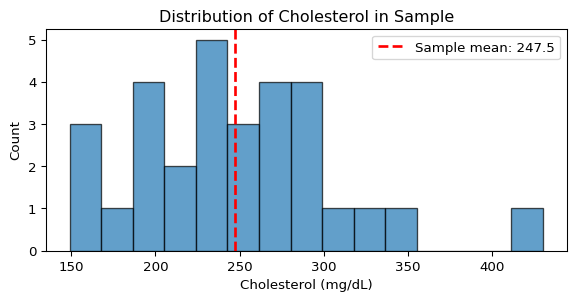
library(tidyverse)
# Set random seed for reproducibility
set.seed(42)
# Load real data from Framingham Heart Study
# File available here:
# https://lacerbi.github.io/stats-for-ds-website/data/fram.txt
fram_data <- read.table("../data/fram.txt", sep="\t", header=TRUE)
chol_data <- na.omit(fram_data$CHOL)
# Take a random sample of 30 observations for our analysis
sample_indices <- sample(length(chol_data), 30, replace=FALSE)
y <- chol_data[sample_indices]
n <- length(y)
cat("Cholesterol data summary (mg/dL):\n")
cat(sprintf(" Sample mean: %.1f\n", mean(y)))
cat(sprintf(" Sample std: %.1f\n", sd(y)))
cat(sprintf(" Sample size: %d\n", n))
cat(sprintf(" Range: [%.0f, %.0f]\n", min(y), max(y)))
# Visualize the data
ggplot(data.frame(cholesterol = y), aes(x = cholesterol)) +
geom_histogram(bins = 15, alpha = 0.7, fill = "steelblue", color = "black") +
geom_vline(xintercept = mean(y), color = "red", linetype = "dashed", linewidth = 1) +
annotate("text", x = mean(y) + 20, y = 5,
label = sprintf("Sample mean: %.1f", mean(y)), color = "red") +
labs(x = "Cholesterol (mg/dL)", y = "Count",
title = "Distribution of Cholesterol in Sample") +
theme_minimal()Step 2: Model Specification
Now we’ll specify our Bayesian model, first in statistical language, then in probabilistic programming language.
Model Specification
- Data: Cholesterol measurements X_i \sim \text{Normal}(\mu, \sigma) for i = 1, \ldots, 30
- Prior: \mu \sim \text{Normal}(210, 40) mg/dL
- Known parameter: \sigma = 45 mg/dL (from external population studies)
This example treats \sigma as known from external calibration studies of cholesterol variability in similar populations. This simplification allows us to focus on the mechanics of MCMC sampling. In practice, if \sigma is unknown, it would be given its own prior (e.g., HalfNormal) and estimated jointly with \mu.
import pymc as pm
# For this example, we use a known standard deviation from external calibration
# This value comes from population studies of cholesterol variability
sigma_known = 45.0 # mg/dL - from external population calibration
print(f"Using known population standard deviation: {sigma_known:.1f} mg/dL")
# Build the model
with pm.Model() as normal_model:
# Prior: Normal centered at 210 mg/dL with SD of 40
mu = pm.Normal("mu", mu=210, sigma=40)
# Likelihood: observed data with known standard deviation
y_obs = pm.Normal("y_obs", mu=mu, sigma=sigma_known, observed=y)Using known population standard deviation: 45.0 mg/dLThe with pm.Model() statement creates a container that
collects all the model components. Everything indented under it
automatically becomes part of normal_model. We’ve defined
two key components: a prior distribution for our unknown parameter
mu, and a likelihood that connects our observed data
y to that parameter through observed=y. The
model is now fully specified and ready for inference.
library(rstan)
library(bayesplot)
# Stan model specification
stan_model_code <- "
data {
int<lower=0> n; // Number of observations
array[n] real y; // Cholesterol measurements
real<lower=0> sigma; // Known standard deviation
}
parameters {
real mu; // Mean cholesterol level
}
model {
// Prior: Normal centered at 210 mg/dL with SD of 40
mu ~ normal(210, 40);
// Likelihood: observed data with known standard deviation
y ~ normal(mu, sigma);
}
"
# For this example, we use a known standard deviation from external calibration
sigma_known <- 45.0 # mg/dL - from external population calibration
cat(sprintf("Using known population standard deviation: %.1f mg/dL\n", sigma_known))
# Prepare data for Stan
stan_data <- list(
n = n,
y = y,
sigma = sigma_known
)
# Compile the model (but don't sample yet)
compiled_model <- stan_model(model_code = stan_model_code)Stan uses a different approach than PyMC: it requires explicit declaration of data types and uses a separate modeling language. The model is divided into three blocks:
data: Declares the observed data and known parameters (here:n,y,sigma)parameters: Declares the unknown parameters to estimate (here: justmu)model: Specifies the prior and likelihood distributions
Here we compile the model to C++ using stan_model().
This compilation step takes time but produces an optimized executable.
We’ll run the actual sampling in Step 4.
Choosing Priors: Art Meets Science
Our prior \text{Normal}(210, 40) reflects medical knowledge that total cholesterol typically ranges from 130-290 mg/dL in adults. The mean of 210 represents a slightly elevated but common level, while the standard deviation of 40 allows the prior to cover the plausible range without being overly restrictive.
Prior selection balances several considerations:
- Domain expertise: What values are biologically/physically plausible?
- Available information: Previous studies, expert opinion, or pilot data
- Computational stability: Some priors work better with certain samplers
- Sensitivity analysis: How much do results change with different reasonable priors?
While the Normal models in this chapter use informative priors, remember that “weakly informative” priors on standardized data (like \text{Normal}(0, 10)) are often a safe default when domain knowledge is limited.
Understanding Stan’s Structure (Optional)
Stan is a statically typed probabilistic programming language that takes a different approach from PyMC. Here are the key concepts:
Type Declarations: Stan requires explicit type declarations for all variables:
intfor integers,realfor real numbersvector[n]for real vectors of length narray[n] real yfor arrays of n real numbers- Constraints like
<lower=0>enforce positivity
The Three Essential Blocks:
data: Fixed inputs including observations and known parametersparameters: Unknown variables to be estimatedmodel: Prior and likelihood specifications
Compilation Model: Stan compiles your model to optimized C++ code, which means:
- Initial compilation may take substantial time (several minutes depending on model complexity)
- Once compiled, the model can be reused with different data without recompiling
- Hyperparameters (like prior means) should be passed as
dataif you want to experiment with them without recompiling
Vectorization: Stan automatically vectorizes operations. These are equivalent:
// Vectorized (preferred)
y ~ normal(mu, sigma);
// Loop version (avoid)
for (i in 1:n) {
y[i] ~ normal(mu, sigma);
}Stan can be used via multiple interfaces such as RStan for R, PyStan for Python, CmdStan for command-line. See the Stan Toolkit page for an updated list.
Step 3: Prior Predictive Check
Before fitting, let’s verify our model (prior + likelihood) generates reasonable data. This combines draws from our prior on \mu with the likelihood to simulate what data we’d expect to see:
Show code
with normal_model:
# Sample from the prior predictive distribution
prior_pred = pm.sample_prior_predictive(samples=5, random_seed=42)
fig, ax = plt.subplots(figsize=(7, 4))
# Get the μ values sampled from the prior
mu_samples = prior_pred.prior["mu"].values.flatten()
# Plot the data distribution for each sampled μ
import scipy.stats as stats
x_range = np.linspace(50, 400, 300)
for mu in mu_samples:
pdf = stats.norm.pdf(x_range, mu, sigma_known)
ax.plot(x_range, pdf, alpha=0.6, label=f'μ = {mu:.0f}')
# Plot observed data histogram
ax.hist(y, bins=20, alpha=0.3, density=True, color='black', label='Observed data')
ax.set_xlabel("Cholesterol (mg/dL)")
ax.set_ylabel("Density")
ax.set_title("Prior Predictive Check: Possible data distributions from our prior")
ax.legend(fontsize=8)
ax.set_xlim(50, 400)
plt.tight_layout()
plt.show()
print(f"Prior on μ: Normal(210, 40)")
print(f"Each curve shows potential data: Normal(μ, {sigma_known:.1f})")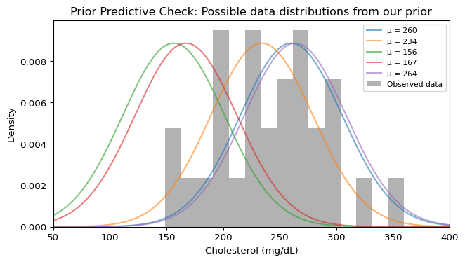
Prior on μ: Normal(210, 40)
Each curve shows potential data: Normal(μ, 45.0)Good! Our observed data falls within the range of data distributions implied by our prior. Each curve represents one possible data distribution given a specific \mu drawn from our prior \text{Normal}(210, 40). The fact that our observed data histogram overlaps with these curves confirms our prior is reasonable.
Step 4: Inference - Sampling from the Posterior
Now we use MCMC to sample from the posterior distribution:
with normal_model:
# Sample from posterior using NUTS
print("Starting MCMC sampling...")
idata = pm.sample(draws=500, tune=500, random_seed=42, progressbar=False)
print("Sampling complete!")Starting MCMC sampling...
Sampling complete!# Sample from the compiled model
cat("Starting MCMC sampling...\n")
normal_fit <- sampling(
compiled_model,
data = stan_data,
iter = 1000, # 500 warmup + 500 sampling per chain
chains = 4,
seed = 42
)
cat("Sampling complete!\n")
What’s Actually Happening During Sampling?
Modern probabilistic programming uses an algorithm called NUTS (No-U-Turn Sampler) that automatically explores the posterior distribution. Two key features:
Multiple chains: PyMC runs multiple independent chains (typically 4), each starting from a different random initial value. This parallelizes computation (using multiple CPU cores) and is essential for convergence diagnostics - we need multiple chains to verify they all find the same posterior distribution. In our example, we’re using the default number of chains (likely 4 on most systems).
Two-phase sampling: Each chain goes through:
- Tuning/Warmup: The sampler learns the “shape” of your posterior – where to look, how big steps to take. These samples are discarded. PyMC’s default is typically 1000 iterations, but we use
tune=500here for speed. - Sampling: Using what it learned, the sampler collects the actual samples we’ll use for inference. Only these post-warmup samples are returned and used for all subsequent analysis. PyMC’s default is typically 1000 draws, but we use
draws=500here for speed.
With our settings (500 post-warmup draws per chain, likely 4 chains), we get 2000 total posterior samples. The iteration counts aren’t rules – complex models might need thousands, simple ones might need fewer. The key innovation is that NUTS adapts automatically, unlike older methods that required manual tuning for each problem.
Step 5: Convergence Diagnostics
Before trusting our posterior samples, we must check for signs that the MCMC sampler has not converged. Recall from the discussion of convergence and \hat{R} that convergence means our chains have found and are exploring the target distribution.
All diagnostics below are computed using only the post-warmup samples – the warmup/tuning iterations have already been discarded. With our settings (4 chains, 500 samples each), we’re analyzing 2000 posterior draws total.
Numerical Diagnostics
First, let’s check the key convergence statistics. Modern MCMC diagnostics focus on two critical measures:
\hat{R} (R-hat): Compares variation between chains to variation within chains. Values close to 1.0 mean that the chains agree with each other. The threshold \hat{R} \leq 1.01 has become standard based on extensive empirical studies (Vehtari et al. 2021) showing it reliably detects non-convergence.
ESS (Effective Sample Size): Because MCMC samples are autocorrelated, 1000 samples don’t provide as much information as 1000 independent draws. ESS estimates the equivalent number of independent samples. The conventional threshold of ESS > 400 total (or 100 per chain with 4 chains) typically ensures stable estimates for posterior means and 95% credible intervals, though more extreme quantiles may require higher ESS.7
We use ArviZ, Python’s library for Bayesian model analysis that provides diagnostics and visualization tools.
import arviz as az
# Check convergence with comprehensive diagnostics
print(az.summary(idata, var_names=["mu"])) mean sd hdi_3% hdi_97% mcse_mean mcse_sd ess_bulk ess_tail \
mu 246.258 7.67 231.363 260.06 0.255 0.14 910.0 1518.0
r_hat
mu 1.0 The ArviZ summary table reports:
- mean, sd: Posterior mean and standard deviation
- hdi_3%, hdi_97%: 94% credible interval
- r_hat: The \(\hat{R}\) statistic (also called the potential scale reduction factor)
- ess_bulk: Effective sample size for central posterior quantities
- ess_tail: Effective sample size for tail quantiles (5th, 95th percentiles)
In our example, \(\hat{R} = 1.0\) shows no sign of non-convergence, and the high ESS values (well above 400) mean we have sufficient effective samples for reliable inference.
# Print comprehensive summary including R̂ and ESS
print(normal_fit)The Stan output displays:
- mean, sd: Posterior mean and standard deviation
- quantiles: Including median (50%) and 95% credible interval (2.5%, 97.5%)
- n_eff: Effective sample size for each parameter
- Rhat: The \(\hat{R}\) statistic (shown in the rightmost column)
Visual Diagnostics: Trace Plots
Numerical diagnostics can miss some problems, so we always inspect trace plots visually:
Show code
# Create trace plot for visual inspection
fig, axes = plt.subplots(1, 2, figsize=(7, 3))
# Extract mu samples for all chains
mu_samples = idata.posterior["mu"].values
# Plot traces for each chain
for chain in range(mu_samples.shape[0]):
axes[0].plot(mu_samples[chain, :], alpha=0.7, linewidth=0.8)
axes[0].set_xlabel("Iteration")
axes[0].set_ylabel("μ")
axes[0].set_title("Trace Plot")
# Plot overlaid densities
for chain in range(mu_samples.shape[0]):
axes[1].hist(mu_samples[chain, :], bins=30, alpha=0.5, density=True)
axes[1].set_xlabel("μ")
axes[1].set_ylabel("Density")
axes[1].set_title("Chain Densities")
plt.tight_layout()
plt.show()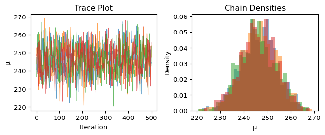
What we’re looking for:
- Trace plot (left): Should look like a “fuzzy caterpillar” - random noise around a stable value with no trends or drift
- Densities (right): All chains should show similar distributions
Our traces show no warning signs: the chains overlap, look alike, and show no trends or drift.
When Diagnostics Fail
If you see:
- \hat{R} > 1.01: Chains haven’t converged to the same distribution
- Low ESS (< 100 per chain): Too much autocorrelation in your samples
- Trends in trace plots: Chains still moving toward the target distribution
- Multimodal traces: Chains stuck exploring different regions
When diagnostics indicate problems, the most common solution is simply to run the sampler longer (more warmup and/or more iterations). If problems persist, it usually indicates issues with the model specification that require more careful investigation.
With no warning signs from either check, we go on to use the samples for inference.
Step 6: Posterior Analysis
Now let’s examine what we’ve learned about the mean cholesterol level. Remember, our posterior is represented by samples - let’s start by simply looking at them:
Show code
# Extract posterior samples for mu
posterior_mu = idata.posterior["mu"].values.flatten()
# Simple histogram of posterior samples
plt.figure(figsize=(6, 3))
plt.hist(posterior_mu, bins=30, alpha=0.7, color='C0')
plt.xlabel("μ (mg/dL)")
plt.ylabel("Count")
plt.title(f"Posterior samples of μ (n={len(posterior_mu)})")
plt.axvline(210, color='gray', linestyle=':', label='Prior mean')
plt.axvline(np.mean(y), color='red', linestyle='--', label='Data mean')
plt.legend()
plt.show()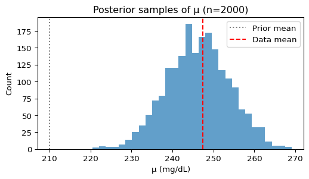
Since the posterior is just a collection of samples, we can compute any summary statistic we want:
Show code
# Compute summaries from the samples
print(f"Posterior mean: {np.mean(posterior_mu):.1f} mg/dL")
print(f"Posterior std: {np.std(posterior_mu):.1f} mg/dL")
print(f"95% credible interval: [{np.percentile(posterior_mu, 2.5):.1f}, "
f"{np.percentile(posterior_mu, 97.5):.1f}] mg/dL")Posterior mean: 246.3 mg/dL
Posterior std: 7.7 mg/dL
95% credible interval: [231.4, 261.3] mg/dLIn Python, ArviZ provides a convenient function that creates a more informative visualization with these summaries included:
Show code
# Professional posterior plot with all summaries
fig, ax = plt.subplots(figsize=(6, 4))
az.plot_posterior(idata, var_names=["mu"], ax=ax)
ax.axvline(210, color='gray', linestyle=':', linewidth=2, label='Prior mean (210)')
ax.axvline(np.mean(y), color='red', linestyle='--', linewidth=2, label=f'Data mean ({np.mean(y):.1f})')
ax.legend()
plt.show()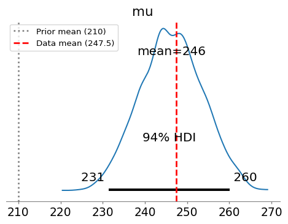
The posterior has been pulled from the prior mean (210 mg/dL) toward the sample mean of our data. This is exactly what we expect from Bayesian updating!
10.5 Discrete Data Models: Dirichlet-Categorical
10.5.1 From Continuous to Categorical: Medical Discretization
So far, we’ve treated cholesterol as a continuous measurement. However, in clinical practice, physicians often work with categorical classifications that guide treatment decisions. The National Cholesterol Education Program defines standard categories for total cholesterol:
- Desirable: < 200 mg/dL
- Borderline High: 200-239 mg/dL
- High: ≥ 240 mg/dL
This discretization isn’t arbitrary – it reflects clinical action thresholds. Patients with “High” cholesterol typically need immediate intervention, while “Borderline High” patients might start with lifestyle modifications. Let’s analyze our Framingham data using these medically-relevant categories.
Show code
# Load the full Framingham dataset (not just our sample of 30)
full_chol = fram_data['CHOL'].dropna().values
n_full = len(full_chol)
# Discretize using clinical thresholds
def categorize_cholesterol(chol):
if chol < 200:
return 0 # Desirable
elif chol < 240:
return 1 # Borderline High
else:
return 2 # High
# Apply categorization
chol_categories = np.array([categorize_cholesterol(c) for c in full_chol])
category_names = ['Desirable', 'Borderline', 'High']
# Count observations in each category
print(f"Cholesterol categories in Framingham data (n={n_full}):")
for i, name in enumerate(category_names):
count = (chol_categories == i).sum()
print(f" {name}: {count} ({100*count/n_full:.1f}%)")Cholesterol categories in Framingham data (n=1394):
Desirable: 322 (23.1%)
Borderline: 495 (35.5%)
High: 577 (41.4%)More than 40% of this cohort falls in the High category, and fewer than a quarter in the Desirable one.
Let’s visualize the discretization to see what information we’re preserving versus losing:
Show code
fig, (ax1, ax2) = plt.subplots(1, 2, figsize=(7, 3))
# Original continuous distribution
ax1.hist(full_chol, bins=30, alpha=0.7, edgecolor='black')
ax1.axvline(200, color='red', linestyle='--', label='200 mg/dL')
ax1.axvline(240, color='red', linestyle='--', label='240 mg/dL')
ax1.set_xlabel('Cholesterol (mg/dL)')
ax1.set_ylabel('Count')
ax1.set_title('Continuous Distribution')
ax1.legend()
# Categorical distribution
category_counts = [(chol_categories == i).sum() for i in range(3)]
ax2.bar(range(3), category_counts,
tick_label=category_names, alpha=0.7, edgecolor='black')
ax2.set_ylabel('Count')
ax2.set_title('Categorical Distribution')
ax2.set_xlabel('Category')
plt.tight_layout()
plt.show()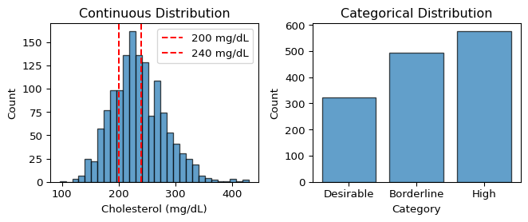
10.5.2 The Dirichlet-Categorical Model
When we have categorical data, we need a different statistical model. The natural choice is:
- Data: Each observation belongs to one of K categories
- Parameter: A probability vector \mathbf{p} = (p_1, \ldots, p_K) where p_k is the probability of category k
- Constraint: The probabilities must sum to 1: \sum_{k=1}^K p_k = 1
- Likelihood: Each observation is a draw from the Categorical distribution, X_i \mid \mathbf{p} \sim \text{Categorical}(\mathbf{p}), meaning \mathbb{P}(X_i = k) = p_k
This constraint means \mathbf{p} lives on the probability simplex – the set of all valid probability distributions over K categories. For our 3-category cholesterol data, this is a triangular surface in 3D space where any point represents a valid probability distribution. Since the three coordinates always sum to 1, we can draw the triangle flat, as in the figure below. Each corner is the distribution that puts all its probability on one category, the centre is (1/3, 1/3, 1/3), and a point gives a category more probability the further it lies from the edge opposite that category’s corner.
The Dirichlet distribution is the natural prior for probability vectors:
\mathbf{p} \sim \text{Dirichlet}(\boldsymbol{\alpha}), \qquad \boldsymbol{\alpha} = (\alpha_1, \ldots, \alpha_K), \quad \alpha_k > 0
It extends the Beta distribution of Chapter 8 from two categories to K. With K = 2 the probability vector is (p, 1 - p), and \text{Dirichlet}(\alpha_1, \alpha_2) is the same as p \sim \text{Beta}(\alpha_1, \alpha_2). The interpretation carries over too: just as \alpha and \beta in the Beta act as pseudo-counts of prior successes and failures, \alpha_k acts as a pseudo-count of prior observations in category k.
The parameter vector \boldsymbol{\alpha} does two separate jobs, one through its ratios and one through its sum. Write \alpha_0 = \sum_{k=1}^K \alpha_k for the sum:
- The ratios set the mean: \mathbb{E}[p_k] = \alpha_k / \alpha_0. For example, \text{Dirichlet}(2, 4, 8) and \text{Dirichlet}(1, 2, 4) have the same mean, (1/7, 2/7, 4/7).
- The sum sets the concentration: \alpha_0 is the total number of pseudo-observations, and the larger it is, the more tightly \mathbf{p} clusters around its mean. Writing m_k = \alpha_k/\alpha_0 for the mean of p_k, its variance is \mathbb{V}(p_k) = m_k(1 - m_k)/(\alpha_0 + 1).
Two special cases are worth knowing. With all \alpha_k = 1 the Dirichlet is uniform over the simplex: every probability vector is equally likely. With all \alpha_k < 1 it favours sparse vectors, pushing its mass towards the edges and corners of the simplex, where one or two categories take nearly all the probability.
Show plotting code
def simplex_xy(p):
"""Map probability vectors (rows of p) to 2D points in the triangle."""
p = np.atleast_2d(p)
return p[:, 1] + 0.5 * p[:, 2], (np.sqrt(3) / 2) * p[:, 2]
def draw_simplex(ax, labels, fontsize=8):
"""Draw the triangle with a label at each corner."""
h = np.sqrt(3) / 2
ax.plot([0, 1, 0.5, 0], [0, 0, h, 0], color='black', linewidth=0.8)
ax.text(-0.03, -0.05, labels[0], ha='right', va='top', fontsize=fontsize)
ax.text(1.03, -0.05, labels[1], ha='left', va='top', fontsize=fontsize)
ax.text(0.5, h + 0.04, labels[2], ha='center', va='bottom', fontsize=fontsize)
ax.set_aspect('equal')
ax.set_xlim(-0.3, 1.3)
ax.set_ylim(-0.15, 1.0)
ax.axis('off')
rng = np.random.default_rng(1)
alphas = [(1, 1, 1), (10, 10, 10), (2, 4, 8), (0.3, 0.3, 0.3)]
fig, axes = plt.subplots(1, 4, figsize=(7, 2.2))
for ax, alpha in zip(axes, alphas):
draws = rng.dirichlet(alpha, size=1000)
x, y_pos = simplex_xy(draws)
draw_simplex(ax, ['$p_1$', '$p_2$', '$p_3$'])
ax.scatter(x, y_pos, s=2, alpha=0.3, color='C0', linewidths=0)
mean_x, mean_y = simplex_xy(np.array(alpha) / np.sum(alpha))
ax.plot(mean_x, mean_y, 'x', color='red', markersize=8, markeredgewidth=2)
ax.set_title(f"Dirichlet{alpha}".replace(" ", ""), fontsize=9)
plt.tight_layout()
plt.show()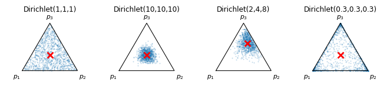
Each blue dot is one probability vector drawn from the Dirichlet, and the red cross marks its mean. \text{Dirichlet}(1, 1, 1) spreads evenly over the whole triangle. \text{Dirichlet}(10, 10, 10) has the same mean, (1/3, 1/3, 1/3), but 30 pseudo-observations instead of 3, so its draws cluster near the centre. \text{Dirichlet}(2, 4, 8) moves the mean towards the p_3 corner. \text{Dirichlet}(0.3, 0.3, 0.3) piles its draws along the edges and into the corners.
Dirichlet-Categorical Conjugacy
The Dirichlet and Categorical form a conjugate pair, just like the Beta and Bernoulli:
- Prior: \mathbf{p} \sim \text{Dirichlet}(\boldsymbol{\alpha})
- Likelihood: Observe n_k instances of category k, out of n = \sum_k n_k observations
- Posterior: \mathbf{p} \mid \text{data} \sim \text{Dirichlet}(\boldsymbol{\alpha} + \mathbf{n}), where \mathbf{n} = (n_1, \ldots, n_K)
The posterior simply adds the observed counts to the prior pseudo-counts! Its mean, (\alpha_k + n_k)/(\alpha_0 + n), is a compromise between the prior mean \alpha_k/\alpha_0 and the observed proportion n_k/n, exactly as for the Beta.
10.5.3 Implementing the Model in PyMC
Let’s fit a Dirichlet-Categorical model to estimate the population proportions of each cholesterol category. We’ll use the same 30 subjects we analyzed earlier with the Normal model, but now treating their cholesterol as categorical:
Show code
# Use the same 30 observations from the Normal-Normal section
# (We are analyzing the same people in different ways!)
chol_sample = chol_sample_continuous # The continuous values from earlier
chol_cats_sample = np.array([categorize_cholesterol(c) for c in chol_sample])
print(f"Using the same {sample_size} subjects from earlier (now categorized)")
# Count observations in each category (store for later use)
sample_counts = np.array([(chol_cats_sample == i).sum() for i in range(3)])
for i, name in enumerate(category_names):
print(f" {name}: {sample_counts[i]} ({100*sample_counts[i]/sample_size:.1f}%)")Using the same 30 subjects from earlier (now categorized)
Desirable: 7 (23.3%)
Borderline: 8 (26.7%)
High: 15 (50.0%)Now let’s build the Bayesian model:
Show code
with pm.Model() as model_uniform:
# Prior: symmetric Dirichlet with all alphas equal to 1 (uniform over the simplex)
alpha = np.ones(3)
p = pm.Dirichlet("p", a=alpha)
# Likelihood: each subject's category is a draw from Categorical(p).
# observed= marks chol_cats_sample as data; PyMC's Categorical uses 0-indexing
observed = pm.Categorical("observed", p=p, observed=chol_cats_sample)
print("Prior: Dirichlet(1, 1, 1)")
print(" Interpretation: every probability vector is equally likely")
print(" Prior strength: 3 pseudo-observations (1 + 1 + 1), very weak")Prior: Dirichlet(1, 1, 1)
Interpretation: every probability vector is equally likely
Prior strength: 3 pseudo-observations (1 + 1 + 1), very weakLet’s look at what this prior says about the category probabilities:
Show code
with model_uniform:
prior = pm.sample_prior_predictive(samples=1000, random_seed=42)
# Extract prior samples for p - flatten across chains
prior_p = prior.prior["p"].values.reshape(-1, 3) # Shape: (n_samples, 3)
fig, (ax1, ax2) = plt.subplots(1, 2, figsize=(7, 3))
# Plot prior samples for each category probability
for i, name in enumerate(category_names):
ax1.hist(prior_p[:, i], bins=30, alpha=0.5, label=name)
ax1.set_xlabel('Probability')
ax1.set_ylabel('Prior samples')
ax1.set_title('Prior on Category Probabilities')
ax1.legend()
# Show some example probability vectors
width = 0.25
x_pos = np.arange(3)
ax2.bar(x_pos - width, prior_p[0, :], width, alpha=0.5, label='Sample 1')
ax2.bar(x_pos, prior_p[10, :], width, alpha=0.5, label='Sample 2')
ax2.bar(x_pos + width, prior_p[20, :], width, alpha=0.5, label='Sample 3')
ax2.set_xticks(x_pos)
ax2.set_xticklabels(category_names)
ax2.set_ylabel('Probability')
ax2.set_title('Example Prior Probability Vectors')
ax2.legend()
plt.tight_layout()
plt.show()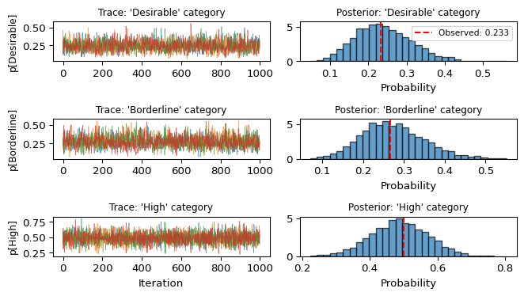
With a symmetric \text{Dirichlet}(1,1,1) prior, we’re saying all probability distributions are equally likely a priori – a very uninformative prior. The histograms on the left are not flat, though: uniform over the triangle does not mean uniform for each category separately. On its own, each p_k follows a \text{Beta}(1, 2) distribution, which favours small values because the three probabilities have to share a total of 1.
10.5.4 Sampling and Convergence
Now let’s sample from the posterior:
Show code
with model_uniform:
# Sample from posterior
idata_uniform = pm.sample(
draws=1000,
tune=1000,
random_seed=42,
progressbar=False
)
print("Sampling complete!")Sampling complete!Let’s check convergence with our standard diagnostics:
Show code
# Summary statistics with convergence diagnostics
print(az.summary(idata_uniform, var_names=["p"])) mean sd hdi_3% hdi_97% mcse_mean mcse_sd ess_bulk ess_tail \
p[0] 0.240 0.074 0.102 0.372 0.002 0.001 1903.0 2206.0
p[1] 0.273 0.077 0.129 0.414 0.002 0.001 1545.0 2146.0
p[2] 0.488 0.085 0.335 0.652 0.001 0.001 3521.0 2654.0
r_hat
p[0] 1.0
p[1] 1.0
p[2] 1.0 All \hat{R} values are 1.0 and ESS values are high, so there is no sign of problems. Let’s visualize the traces:
Show code
fig, axes = plt.subplots(3, 2, figsize=(7, 4))
# Extract posterior samples
posterior_p = idata_uniform.posterior["p"].values
for i, name in enumerate(category_names):
# Trace plot
for chain in range(posterior_p.shape[0]):
axes[i, 0].plot(posterior_p[chain, :, i], alpha=0.7, linewidth=0.5)
axes[i, 0].set_ylabel(f'p[{name}]', fontsize=9)
if i == 2:
axes[i, 0].set_xlabel('Iteration')
axes[i, 0].set_title(f"Trace: '{name}' category", fontsize=9)
# Density plot
axes[i, 1].hist(posterior_p[:, :, i].flatten(), bins=30,
alpha=0.7, density=True, edgecolor='black')
axes[i, 1].set_xlabel('Probability')
axes[i, 1].set_title(f"Posterior: '{name}' category", fontsize=9)
# Add observed proportion as vertical line
observed_prop = sample_counts[i] / sample_size
axes[i, 1].axvline(observed_prop, color='red', linestyle='--',
label=f'Observed: {observed_prop:.3f}')
if i == 0:
axes[i, 1].legend(fontsize=8)
plt.tight_layout()
plt.show()
10.5.5 Posterior Analysis
Let’s examine what we’ve learned about the population proportions:
Show code
# Compute posterior statistics
posterior_flat = posterior_p.reshape(-1, 3) # Flatten chains
print("Posterior estimates of population proportions:")
print("=" * 60)
for i, name in enumerate(category_names):
post_mean = np.mean(posterior_flat[:, i])
post_std = np.std(posterior_flat[:, i])
ci_low, ci_high = np.percentile(posterior_flat[:, i], [2.5, 97.5])
observed = sample_counts[i] / sample_size
print(f"{name:12s}: Mean = {post_mean:.3f} ± {post_std:.3f}")
print(f" 95% CI = [{ci_low:.3f}, {ci_high:.3f}]")
print(f" Observed = {observed:.3f}")
print()Posterior estimates of population proportions:
============================================================
Desirable : Mean = 0.240 ± 0.074
95% CI = [0.109, 0.400]
Observed = 0.233
Borderline : Mean = 0.273 ± 0.077
95% CI = [0.135, 0.438]
Observed = 0.267
High : Mean = 0.488 ± 0.085
95% CI = [0.322, 0.652]
Observed = 0.500
The posterior means are close to the observed proportions, but with only 30 observations there’s substantial uncertainty: the 95% credible interval for the High category runs from roughly 0.32 to 0.65.
Because the Dirichlet is conjugate to the Categorical, we can check these results exactly. The counts are \mathbf{n} = (7, 8, 15), so the posterior is \text{Dirichlet}(1 + 7, 1 + 8, 1 + 15) = \text{Dirichlet}(8, 9, 16), with means 8/33 \approx 0.242, 9/33 \approx 0.273 and 16/33 \approx 0.485. These match the MCMC posterior means above.
On the simplex, the data turn the uniform prior into a posterior concentrated around the observed proportions:
Show code
fig, axes = plt.subplots(1, 2, figsize=(7, 3))
panels = [(prior_p, "Prior: Dirichlet(1, 1, 1)"),
(posterior_flat, "Posterior: Dirichlet(8, 9, 16)")]
for ax, (draws, title) in zip(axes, panels):
draw_simplex(ax, category_names)
x, y_pos = simplex_xy(draws)
ax.scatter(x, y_pos, s=2, alpha=0.3, color='C0', linewidths=0)
obs_x, obs_y = simplex_xy(sample_counts / sample_size)
ax.plot(obs_x, obs_y, '*', color='red', markersize=10)
ax.set_title(title, fontsize=9)
plt.tight_layout()
plt.show()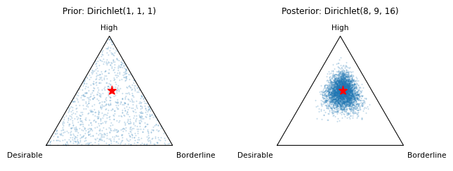
The red star marks the observed proportions, and each dot on the right is one posterior draw of \mathbf{p} from MCMC. The cloud has moved from the centre of the triangle towards the High corner, around the observed proportions, and its spread shows how much uncertainty 30 observations leave.
Stan Implementation (Optional)
For readers familiar with Stan, here’s the equivalent categorical model:
data {
int<lower=1> n; // Number of observations
int<lower=1> k; // Number of categories
array[n] int<lower=1, upper=k> x; // Category assignments (1-indexed!)
vector[k] alpha; // Dirichlet prior parameters
}
parameters {
simplex[k] p; // Probability vector (sums to 1)
}
model {
p ~ dirichlet(alpha); // Prior
x ~ categorical(p); // Likelihood
}Note that Stan uses 1-based indexing for categories, unlike PyMC’s 0-based indexing.
Prior Sensitivity: How Much Does the Prior Matter?
A prior sensitivity analysis redoes the analysis under alternative reasonable priors and checks how much the conclusions move. The uniform prior is not the only reasonable choice here. Suppose we had instead built a prior from recent US survey data (2015–2018), which put roughly 55% of adults in the Desirable category, 35% in Borderline and 10% in High. With the weight of 20 pseudo-observations, that belief is \text{Dirichlet}(11, 7, 2). It sounds reasonable, but it describes a far healthier population than this cohort.
Conjugacy makes the sensitivity analysis immediate, because the posterior of a single category’s probability is a Beta distribution, p_k \mid \text{data} \sim \text{Beta}(\alpha_k + n_k, \ \alpha_0 + n - \alpha_k - n_k). The code below plots the exact posterior of the High probability under both priors, for our 30 subjects and for the full cohort:
Show code
priors_sens = {"Uniform prior": np.array([1, 1, 1]),
"Modern US prior": np.array([11, 7, 2])}
full_counts = np.array([(chol_categories == i).sum() for i in range(3)])
datasets = {f"Our sample (n = {sample_size})": sample_counts,
f"Full cohort (n = {n_full})": full_counts}
p_grid = np.linspace(0, 1, 1000)
fig, axes = plt.subplots(1, 2, figsize=(7, 3))
for ax, (data_name, counts) in zip(axes, datasets.items()):
for (prior_name, alpha_prior), ls in zip(priors_sens.items(), ['-', '--']):
post = alpha_prior + counts # Conjugate update
# Marginal posterior of p_High (index 2) is Beta
density = stats.beta.pdf(p_grid, post[2], post.sum() - post[2])
ax.plot(p_grid, density, ls, label=prior_name)
print(f"{data_name}, {prior_name}: "
f"posterior mean of p_High = {post[2] / post.sum():.3f}")
ax.set_title(data_name, fontsize=9)
ax.set_xlabel("Probability of High cholesterol")
axes[0].set_ylabel("Posterior density")
axes[1].set_xlim(0.3, 0.55)
axes[0].legend(loc='upper right', fontsize=8)
plt.tight_layout()
plt.show()Our sample (n = 30), Uniform prior: posterior mean of p_High = 0.485
Our sample (n = 30), Modern US prior: posterior mean of p_High = 0.340
Full cohort (n = 1394), Uniform prior: posterior mean of p_High = 0.414
Full cohort (n = 1394), Modern US prior: posterior mean of p_High = 0.409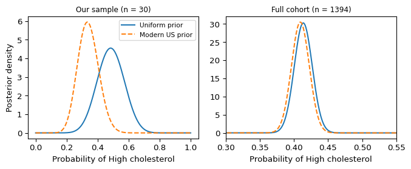
With 30 observations, the two priors lead to visibly different conclusions. The posterior mean of the High probability is 0.48 under the uniform prior and 0.34 under the modern US prior, whose 20 pseudo-observations carry two thirds of the weight of the 30 real ones. With the full cohort, the data overwhelm both priors and the two posteriors nearly coincide (note the narrower horizontal range in the right panel).
A sensitivity analysis does not tell us which prior is right: that depends on what was known before seeing the data. What it does tell us is how much the answer depends on that choice, which is worth reporting whenever the sample is small.
10.6 Bayesian Model Comparison
So far we have fitted one model at a time, but often there are several candidate models for the same data and we need to choose between them. Here is a concrete question from the Framingham data: do women and men differ in their mean cholesterol? Each possible answer is a model:
- Model 1 (pooled): everyone shares one mean, X_i \sim \text{Normal}(\mu, \sigma).
- Model 2 (by sex): women and men each have their own mean, X_i \sim \text{Normal}(\mu_{s_i}, \sigma), where s_i \in \{\text{female}, \text{male}\} is the sex of subject i.
Model 1 is the special case of Model 2 with \mu_{\text{female}} = \mu_{\text{male}}, so choosing between them is the Bayesian counterpart of the two-sample test in Chapter 7 (Example: Comparing Two Means). Model 2 is also a regression of cholesterol on a single binary predictor, as in Chapter 9.
In a Bayesian context, testing is usually performed via model comparison. The aim is to infer which of multiple models \mathcal{M}_1, \ldots, \mathcal{M}_k is the best fit for the data. What “best” means depends on what we are willing to assume about reality.
10.6.1 Two Philosophies of Model Comparison
Bayesian model comparison comes in two fundamentally different flavors, depending on what we believe about reality (Kelter 2021):
\mathcal{M}-closed perspective: Assumes one of our candidate models is actually the true data-generating process. The set \mathcal{M} of models is “closed” because it contains the truth – we just need to figure out which one it is. This classical Bayesian approach treats model selection like a multiple choice question where one answer is definitely correct. We compute posterior probabilities over models, \mathbb{P}(\mathcal{M}_i \mid X^n = x^n), asking: “Given the data, what’s the probability that Model i is the true model?”
\mathcal{M}-open perspective: Acknowledges that all our models are wrong – approximations of a reality that’s more complex than anything we can write down. The model set is “open” because the true process lies outside it. Since no model is true, we can’t ask “which one is correct?” Instead, we ask “which approximation makes the best predictions?” This is the more realistic perspective for most real-world problems.
In practice, the \mathcal{M}-open perspective is more realistic. Statistician George E. P. Box famously said “All models are wrong, but some are useful.” Our two models are clearly simplifications: cholesterol is not exactly normally distributed (its distribution is skewed to the right), and many factors besides sex affect it. So we’ll focus on predictive performance.
10.6.2 Model Comparison in the \mathcal{M}-Closed Setting
In the \mathcal{M}-closed approach, we apply Bayes’ theorem directly to models:
\mathbb{P}(\mathcal{M}_i \mid X^n = x^n) \propto f(x^n \mid \mathcal{M}_i) \cdot \mathbb{P}(\mathcal{M}_i)
The key quantity here is f(x^n \mid \mathcal{M}_i), called the marginal likelihood or evidence, which integrates the likelihood over all possible parameter values weighted by the prior:
f(x^n \mid \mathcal{M}_i) = \int f(x^n \mid \theta, \mathcal{M}_i) f(\theta \mid \mathcal{M}_i) \, d\theta
This integral averages how well the model explains the data across all parameter values the prior considers plausible.
To compare two models, we often compute the ratio of their posterior probabilities:
\frac{\mathbb{P}(\mathcal{M}_1 \mid x^n)}{\mathbb{P}(\mathcal{M}_2 \mid x^n)} = \frac{f(x^n \mid \mathcal{M}_1)}{f(x^n \mid \mathcal{M}_2)} \cdot \frac{\mathbb{P}(\mathcal{M}_1)}{\mathbb{P}(\mathcal{M}_2)}
When we assign equal prior probabilities to both models (no preference a priori), this simplifies to just the ratio of marginal likelihoods, called the Bayes factor:
\text{BF}_{12} = \frac{f(x^n \mid \mathcal{M}_1)}{f(x^n \mid \mathcal{M}_2)}
A Bayes factor of 10 means the data are 10 times more likely under Model 1 than Model 2.
A Note on Prior Sensitivity
Bayes factors are widely used and mathematically principled, but they do have an important limitation: they are sensitive to the prior, especially its width.
Making a prior twice as wide can dramatically reduce the marginal likelihood, even if the posterior barely changes. This happens because the likelihood is usually much more concentrated than the prior. A broader prior “wastes” probability mass on unlikely parameter values, reducing the evidence. In our example, widening the priors on the means would penalise Model 2, which has two of them, more than Model 1, and so shift the Bayes factor towards Model 1 without changing either posterior much.
This sensitivity doesn’t make Bayes factors wrong – they correctly answer the question “which model is more probable?” under the \mathcal{M}-closed assumption. But it does mean you need confidence in your prior specification, which can be challenging in practice.
10.6.3 The Alternative: Predictive Model Comparison
Given this sensitivity and the fact that all our models are approximations anyway, this chapter focuses on the \mathcal{M}-open approach. Instead of asking “which model is true?” (when none are), we ask “which model makes better predictions?” This shifts our focus from model probability to predictive performance. It is the same principle as model selection in Chapter 9: judge a model by how well it predicts new data, not by how well it fits the data it was trained on.
Expected Log Predictive Density (ELPD)
To predict a new observation x^\star after seeing data X^n, we use the posterior predictive distribution:
p(x^\star \mid X^n) = \int p(x^\star \mid \theta) p(\theta \mid X^n) \, d\theta
Taking the logarithm gives the log predictive density (LPD) for that specific observation:
\text{LPD}(x^\star) = \log p(x^\star \mid X^n)
But LPD for a single point isn’t enough – it depends on which x^\star we happen to see. We need the expected log predictive density (ELPD) over all possible future observations:
\text{ELPD} = \mathbb{E}_{x^\star \sim p_{\text{true}}}[\text{LPD}(x^\star)]
This measures average predictive performance, which is what we actually care about for model comparison.
In practice with MCMC samples \theta_i \sim p(\theta \mid X^n), we approximate LPD as:
\widehat{\text{LPD}}(x^\star) = \log \left( \frac{1}{m} \sum_{i=1}^m p(x^\star \mid \theta_i) \right)
Leave-One-Out Cross-Validation for ELPD
We can’t compute true ELPD without knowing p_{\text{true}} and having infinite future data. Scoring the model on the data it was fitted to would be too optimistic, just as training error is in Chapter 9. The solution is leave-one-out cross-validation (LOO-CV), which Chapter 9 introduced with squared prediction error as the score: treat each existing observation as a “future” test point for a model trained without it. Here, each held-out point is scored by its log predictive density instead.
For each observation x_k, we’d ideally:
- Obtain the posterior p(\theta \mid X_{-k}) using all data except x_k
- Compute the posterior predictive p(x_k \mid X_{-k}) = \int p(x_k \mid \theta) p(\theta \mid X_{-k}) d\theta
- Sum over all k to estimate ELPD
This gives ELPD-LOO:
\text{ELPD-LOO} = \sum_{k=1}^n \log p(x_k \mid X_{-k})
Actually refitting the model n times would be computationally prohibitive. Fortunately, we can approximate this efficiently by reweighting our existing posterior samples:
\text{ELPD-LOO} = \sum_{k=1}^n \log \left( \frac{\sum_{i=1}^m w_i^{(k)} p(x_k \mid \theta_i)}{\sum_{i=1}^m w_i^{(k)}} \right)
where the weights w_i^{(k)} are computed using Pareto-smoothed importance sampling (PSIS). This is what ArviZ’s loo() function implements. It needs the pointwise log-likelihoods \log p(x_k \mid \theta_i) for every observation x_k and posterior draw \theta_i, which PyMC stores only when asked, by calling pm.sample() with idata_kwargs={"log_likelihood": True}.
10.6.4 Does Cholesterol Differ by Sex?
To fit the two models we need priors. For each mean (\mu in Model 1, \mu_{\text{female}} and \mu_{\text{male}} in Model 2) we reuse the \text{Normal}(210, 40) prior of the Normal-Normal model. Unlike in that model, \sigma is now unknown, and we give it a \text{HalfNormal}(50) prior, as in Example: Measuring Heights with Unknown Mean and Variance. These priors are not conjugate to the likelihood, so this time there is no exact posterior to check MCMC against.
We start with the same 30 subjects as before:
Show code
# Sex of the same 30 subjects (CHOL has no missing values, so rows line up)
sex = fram_data['SEX'].values[sample_indices]
# Index 0 for women, 1 for men: Model 2 uses it to pick each subject's mean
sex_idx = (sex == "male").astype(int)
print(f"Our sample: {np.sum(sex_idx == 0)} women, {np.sum(sex_idx == 1)} men")
print(f"Sample mean for women: {chol_sample[sex_idx == 0].mean():.1f} mg/dL")
print(f"Sample mean for men: {chol_sample[sex_idx == 1].mean():.1f} mg/dL")Our sample: 18 women, 12 men
Sample mean for women: 252.7 mg/dL
Sample mean for men: 239.6 mg/dLWe write each model as a function of the data, so that we can refit it to the full cohort later:
Show code
def fit_pooled(chol):
"""Model 1: one mean for everyone."""
with pm.Model():
# Priors
mu = pm.Normal("mu", mu=210, sigma=40)
sigma = pm.HalfNormal("sigma", sigma=50)
# Likelihood
pm.Normal("chol", mu=mu, sigma=sigma, observed=chol)
# Store pointwise log-likelihoods: LOO needs them
return pm.sample(draws=1000, tune=1000, random_seed=42, progressbar=False,
idata_kwargs={"log_likelihood": True})
def fit_by_sex(chol, sex_idx):
"""Model 2: one mean per sex."""
with pm.Model():
# Priors: mu[0] is the mean for women, mu[1] the mean for men
mu = pm.Normal("mu", mu=210, sigma=40, shape=2)
sigma = pm.HalfNormal("sigma", sigma=50)
# Likelihood: mu[sex_idx] gives each subject the mean of their group
pm.Normal("chol", mu=mu[sex_idx], sigma=sigma, observed=chol)
return pm.sample(draws=1000, tune=1000, random_seed=42, progressbar=False,
idata_kwargs={"log_likelihood": True})
idata_pooled_30 = fit_pooled(chol_sample)
idata_sex_30 = fit_by_sex(chol_sample, sex_idx)
print(az.summary(idata_pooled_30))
print(az.summary(idata_sex_30)) mean sd hdi_3% hdi_97% mcse_mean mcse_sd ess_bulk \
mu 244.882 10.908 222.871 264.220 0.176 0.199 3852.0
sigma 61.632 8.076 47.323 76.703 0.134 0.131 3738.0
ess_tail r_hat
mu 2550.0 1.0
sigma 3016.0 1.0
mean sd hdi_3% hdi_97% mcse_mean mcse_sd ess_bulk \
mu[0] 247.601 14.132 221.233 274.241 0.202 0.224 4882.0
mu[1] 234.341 16.103 205.334 265.369 0.221 0.246 5299.0
sigma 62.029 8.069 48.156 77.879 0.118 0.155 4828.0
ess_tail r_hat
mu[0] 2589.0 1.0
mu[1] 3026.0 1.0
sigma 2791.0 1.0 The argument shape=2 makes mu a vector of two means, and indexing it with sex_idx plays the role of the indicator variable in a regression with a binary predictor. The diagnostics show no sign of problems for either model: every \hat{R} is 1.0 and the effective sample sizes are well above 400.
Now we compare them with az.compare(), which computes ELPD-LOO for each model and ranks them:
Show code
comparison_30 = az.compare({"Pooled": idata_pooled_30, "By sex": idata_sex_30})
print(comparison_30) rank elpd_loo p_loo elpd_diff weight se dse \
Pooled 0 -167.521416 2.451945 0.000000 1.0 5.644310 0.000000
By sex 1 -168.149982 3.013645 0.628566 0.0 5.507452 0.487463
warning scale
Pooled False log
By sex False log The comparison table shows models ranked by ELPD-LOO (higher is better). The key columns are:
- rank: from best (0) to worst
- elpd_loo: the ELPD-LOO estimate for each model
- p_loo: the effective number of parameters, an estimate of how flexible the model is
- elpd_diff: the difference in ELPD-LOO from the best model (0 for the best model, positive for the others)
- dse: the standard error of that difference
- se: the standard error of each model’s individual ELPD-LOO (not used for comparison!)
Important: Don’t Compare Individual Standard Errors!
The se column shows each model’s individual ELPD uncertainty. You cannot determine if models are significantly different by checking if the intervals \text{elpd\_loo} \pm 2\,\text{se} overlap - that would be statistically incorrect.
Why? Both models are fitted to the same data, so their ELPD estimates are correlated (they make similar errors on the same hard-to-predict observations). The proper comparison uses the standard error of the difference, dse, which az.compare() computes for us.
To decide whether a difference is meaningful, we use the Wald test of Chapter 7. Treating elpd_diff as approximately Normal with standard error dse, the difference is significant at the 5% level if the interval \text{elpd\_diff} \pm 2\,\text{dse} does not include 0, that is, if \text{elpd\_diff} > 2\,\text{dse}.8
With 30 subjects, the pooled model ranks first, and the by-sex model’s elpd_diff is below 2\,\text{dse}: the data cannot tell the two models apart. The women in our sample average about 13 mg/dL more than the men, but with a standard deviation of around 60 mg/dL in this sample, a gap of that size easily arises by chance in groups of 18 and 12 people. The p_loo column shows the price of Model 2’s extra mean. An extra parameter raises ELPD-LOO only if it improves the predictions for held-out points by more than the extra estimation noise costs, and here it does not. AIC makes the same trade-off explicit in Chapter 9: on the log-likelihood scale of ELPD-LOO, its penalty is one unit per parameter, and p_loo plays the role of the parameter count.
Failing to find a difference is not the same as showing there is none, and Model 2 is not rejected either. Let’s refit both models to the full cohort:
Show code
chol_all = fram_data['CHOL'].values
sex_idx_all = (fram_data['SEX'].values == "male").astype(int)
print(f"Full cohort: {np.sum(sex_idx_all == 0)} women, {np.sum(sex_idx_all == 1)} men")
idata_pooled_all = fit_pooled(chol_all)
idata_sex_all = fit_by_sex(chol_all, sex_idx_all)
comparison_all = az.compare({"Pooled": idata_pooled_all, "By sex": idata_sex_all})
print(comparison_all)Full cohort: 731 women, 663 men
rank elpd_loo p_loo elpd_diff weight se \
By sex 0 -7302.411283 3.256835 0.000000 1.000000e+00 29.087248
Pooled 1 -7325.977655 2.290555 23.566372 1.328715e-12 29.618007
dse warning scale
By sex 0.00000 False log
Pooled 6.70351 False log Now the by-sex model ranks first, and the pooled model’s elpd_diff is more than three times its dse, a clear difference by the 2\,\text{dse} rule. The figure shows both comparisons as the difference in ELPD-LOO between Model 2 and Model 1, with error bars of \pm 2\,\text{dse}:
Show code
fig, axes = plt.subplots(1, 2, figsize=(7, 2.2))
panels = [(f"Our sample (n = {sample_size})", comparison_30),
(f"Full cohort (n = {len(chol_all)})", comparison_all)]
for ax, (title, comp) in zip(axes, panels):
diff = comp.loc["By sex", "elpd_loo"] - comp.loc["Pooled", "elpd_loo"]
dse = comp["dse"].iloc[1] # The lower-ranked model's row holds the SE of the difference
ax.errorbar(diff, 0, xerr=2 * dse, fmt='o', markersize=8, capsize=5,
color='steelblue', ecolor='black', elinewidth=2)
ax.axvline(0, color='red', linestyle='--', linewidth=1.5)
ax.set_yticks([])
ax.set_title(title, fontsize=9)
ax.set_xlabel("ELPD-LOO: By sex minus Pooled")
plt.tight_layout()
plt.show()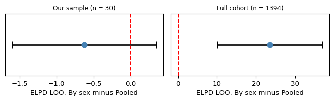
Key findings:
- With 30 subjects, no difference is detectable. The error bar straddles zero: the simpler pooled model ranks first, but neither model is rejected.
- With 1394 subjects, the by-sex model predicts clearly better. The whole error bar lies to the right of zero.
- The models are the same in both cases; only the amount of data changed. An extra parameter earns its place once there are enough data to estimate it well.
Model comparison tells us that giving each sex its own mean improves predictions. How large is the difference? The posterior samples of Model 2 answer that directly, as the draw-by-draw difference of the two means:
Show code
mu_samples = idata_sex_all.posterior["mu"].values.reshape(-1, 2)
diff_mu = mu_samples[:, 0] - mu_samples[:, 1] # Women minus men
print(f"Posterior mean of mu_female - mu_male: {np.mean(diff_mu):.1f} mg/dL")
print(f"95% credible interval: [{np.percentile(diff_mu, 2.5):.1f}, "
f"{np.percentile(diff_mu, 97.5):.1f}] mg/dL")Posterior mean of mu_female - mu_male: 17.2 mg/dL
95% credible interval: [12.3, 22.0] mg/dLWomen in this cohort have a mean cholesterol about 17 mg/dL higher than men.
Model Comparison in Stan (Optional)
Stan users can perform the same LOO-based model comparison. First, add a generated quantities block to compute log likelihoods:
generated quantities {
vector[n] log_lik;
for (i in 1:n) {
log_lik[i] = normal_lpdf(y[i] | mu[sex[i]], sigma);
}
}This block is for the by-sex model, where sex is an integer array coded 1 for women and 2 for men, since Stan indexes from 1.
Then in R, use the loo package:
library(loo)
# Extract log-likelihood for each model
log_lik_1 <- extract_log_lik(fit1, merge_chains = FALSE)
log_lik_2 <- extract_log_lik(fit2, merge_chains = FALSE)
# Compute LOO
loo_1 <- loo(log_lik_1)
loo_2 <- loo(log_lik_2)
# Compare models
loo_compare(loo_1, loo_2)The interpretation is the same as in PyMC, with one change of sign: loo_compare() reports elpd_diff as negative for the worse model, with its standard error se_diff, and the difference is significant if its magnitude exceeds 2×se_diff.
Advanced Topic: Hierarchical Models
While beyond this chapter’s scope, hierarchical models deserve mention as they’re ubiquitous in modern Bayesian practice. These models have parameters that themselves follow probability distributions with hyperparameters:
\begin{aligned} y_i &\sim f(y_i \mid \theta_i) \\ \theta_i &\sim g(\theta_i \mid \phi) \\ \phi &\sim h(\phi) \end{aligned}
This creates “partial pooling” – groups share information through the common hyperparameters \phi, but maintain their own parameters \theta_i. Examples include:
- Clinical trials with patient-specific effects
- Educational assessments across schools
- Time series with varying parameters
For comprehensive treatment, see Gelman et al.’s Bayesian Data Analysis or the Stan manual’s case studies.
10.7 Chapter Summary and Connections
10.7.1 Key Concepts Review
MCMC and Convergence:
- Posterior sampling: Generate samples from the posterior rather than computing it analytically
- Convergence diagnostics: \hat{R} \leq 1.01, ESS > 400, visual “fuzzy caterpillar” trace plots
- Multiple chains: 4 chains provide parallelization and convergence verification
- NUTS algorithm: Modern sampler that adapts step size and trajectory length automatically
Probabilistic Programming with PyMC:
- Model specification:
with pm.Model()context + sampling notation matching math - Prior predictive checks: Verify priors generate reasonable data before fitting
- Automatic differentiation: System handles gradients, tuning, diagnostics
- Key argument:
idata_kwargs={"log_likelihood": True}for model comparison
Models We Implemented:
- Normal-Normal: Known \sigma, estimate \mu with real cholesterol data
- Beta-Binomial: The A/B test from Chapter 7, with the posterior of a difference computed from samples
- Dirichlet-Categorical: Medical categories (Desirable/Borderline/High cholesterol); the Dirichlet generalises the Beta, with \boldsymbol{\alpha} acting as pseudo-counts
- Pooled vs. by-sex Normal models: Unknown \sigma, no conjugate posterior, compared with ELPD-LOO on 30 subjects and on the full cohort
Model Comparison:
- \mathcal{M}-closed: Bayes factors assume one model is true (prior-sensitive)
- \mathcal{M}-open: ELPD-LOO measures predictive accuracy (more robust)
- Interpretation: elpd_diff > 2×dse indicates a meaningful difference; with too little data, even a real difference goes undetected
10.7.2 The Big Picture
This chapter revealed three fundamental insights:
1. Samples Are Enough: We don’t need closed-form posteriors. MCMC samples let us compute any quantity of interest – means, credible intervals, posterior predictive distributions. This liberates us from conjugacy constraints.
2. Automation Enables Exploration: Probabilistic programming handles the computational heavy lifting (gradients, tuning, diagnostics), letting us focus on modeling choices rather than numerical methods. The barrier to trying different models has never been lower.
3. The Standard Workflow Works: Prior predictive → Fit → Diagnose → Posterior analysis → Model comparison. This systematic approach scales from toy problems to production models with hundreds of parameters. We demonstrated it on real medical data, showing how practical considerations (like clinical thresholds) drive modeling choices.
10.7.3 Common Pitfalls to Avoid
- Ignoring convergence warnings: Never proceed with \hat{R} > 1.01 or low ESS – fix sampling issues first.
- Misinterpreting ELPD-LOO: Higher ELPD means better predictions, not that the model is “true.”
- Discarding uncertainty: Report credible intervals, not just posterior means.
- Complexity before comprehension: Master simple models before attempting hierarchical structures.
10.7.4 Chapter Connections
Previous (Chapters 8-9):
- Chapter 8 established Bayesian theory (priors, posteriors, conjugacy) – this chapter showed how to compute posteriors when conjugacy fails, using MCMC sampling instead of closed forms.
- The by-sex model is a regression on a single binary predictor (Chapter 9) fitted the Bayesian way. The same approach puts priors on the coefficients of any regression model and quantifies the uncertainty in all its parameters.
- Both chapters relied on analytical or optimization methods – here we use sampling, which scales to arbitrarily complex models.
This Chapter: Brought Bayesian inference to life through probabilistic programming with PyMC. We learned to specify models in code, diagnose MCMC convergence (\hat{R}, ESS, trace plots), handle discrete data (Dirichlet-Categorical), and compare models using predictive accuracy (ELPD-LOO). Real Framingham Heart Study data grounded these concepts in medical decision-making contexts.
Next (Chapters 11-12):
- Chapter 11 (Causal Inference) will explore DAGs, do-operations, and counterfactuals to distinguish correlation from causation – while not explicitly Bayesian, these concepts combine naturally with the uncertainty quantification we’ve learned
- Chapter 12 (Missing Data) will address survivorship bias and imputation methods – the multiple imputation approach shares philosophical similarities with our posterior sampling
10.7.5 Self-Test Problems
Interpreting Convergence Diagnostics: You run a model and see:
mean sd hdi_3% hdi_97% r_hat ess_bulk theta 5.23 8.91 -12.3 22.7 1.43 47What’s wrong and how would you fix it?
Solution\hat{R} = 1.43 >> 1.01 means chains haven’t converged. ESS = 47 << 400 means too few effective samples. Try: longer chains (
tune=2000), highertarget_accept(0.95), or better priors to avoid flat regions.Prior vs Data Influence: Your prior is \mu \sim \text{Normal}(210, 40) for cholesterol. You observe \bar{x} = 230 from n=30 samples with known \sigma=35. Will the posterior mean be closer to 210 or 230? Why?
SolutionCompare precisions: prior precision \tau_0^{-2} = 1/40^2 \approx 0.000625, data precision n/\sigma^2 = 30/35^2 \approx 0.0245. Since data precision >> prior precision, the posterior will be pulled much closer to \bar{x} = 230.
Dirichlet-Categorical Conjugacy: You have a Dirichlet(1, 1, 1) prior for three categories. You observe counts (10, 15, 5). What’s the posterior distribution?
SolutionDirichlet-Categorical conjugacy means you just add the counts to the prior parameters: posterior is Dirichlet(1+10, 1+15, 1+5) = Dirichlet(11, 16, 6). The posterior mean for category k is \alpha_k / \sum \alpha_i = 11/33, 16/33, 6/33.
Interpreting ELPD-LOO:
az.compare()ranks Model A first, and Model B’s row shows elpd_diff = 3.5 with dse = 1.8. Is the difference meaningful?SolutionThe difference is 3.5 in favor of Model A, with dse (standard error of the difference) = 1.8. Since 3.5 < 2×1.8 = 3.6, the difference is not statistically significant. The models perform similarly; neither is clearly better. Note: Use
dse(difference SE), notse(individual model SE)!
10.7.6 Python and R Reference
Model Building:
import pymc as pm
import arviz as az
import numpy as np
# Basic model structure
with pm.Model() as model:
# Priors
theta = pm.Normal("theta", mu=0, sigma=1)
sigma = pm.HalfNormal("sigma", sigma=1)
# Likelihood
y = pm.Normal("y", mu=theta, sigma=sigma, observed=data)Sampling and Diagnostics:
# Sample with convergence diagnostics
with model:
# Prior predictive check
prior_pred = pm.sample_prior_predictive(samples=1000)
# Posterior sampling
idata = pm.sample(
draws=1000, # Post-warmup samples per chain
tune=1000, # Warmup samples per chain
chains=4, # Number of chains
target_accept=0.9, # For difficult geometries
random_seed=42, # Reproducibility
idata_kwargs={"log_likelihood": True} # For model comparison
)
# Posterior predictive check
post_pred = pm.sample_posterior_predictive(idata)
# Convergence diagnostics
print(az.summary(idata)) # Shows r_hat, ESS
az.plot_trace(idata) # Visual convergence check
az.plot_energy(idata) # NUTS energy diagnostic
# Check for divergences
divergences = idata.sample_stats["diverging"].sum().item()
print(f"Number of divergences: {divergences}")Common Distributions:
# Continuous
pm.Normal("x", mu=0, sigma=1)
pm.HalfNormal("x", sigma=1) # x > 0
pm.Exponential("x", lam=1) # x > 0
pm.Beta("x", alpha=1, beta=1) # 0 < x < 1
pm.LogNormal("x", mu=0, sigma=1) # x > 0
# Discrete
pm.Bernoulli("x", p=0.5)
pm.Binomial("x", n=10, p=0.5)
pm.Poisson("x", mu=5)
pm.Categorical("x", p=[0.2, 0.3, 0.5])
pm.NegativeBinomial("x", mu=5, alpha=2)
# Multivariate
pm.Dirichlet("x", a=np.ones(3)) # Probability vector
pm.MvNormal("x", mu=np.zeros(2), cov=np.eye(2))Model Comparison:
# Compute LOO for each model
loo1 = az.loo(idata1)
loo2 = az.loo(idata2)
# Compare models
comp = az.compare({"Model1": idata1, "Model2": idata2})
print(comp)
# Plot comparison
az.plot_compare(comp)For readers familiar with Stan, here are equivalent patterns:
Model Structure:
data {
int<lower=0> n;
array[n] real y;
}
parameters {
real theta;
real<lower=0> sigma;
}
model {
// Priors
theta ~ normal(0, 1);
sigma ~ normal(0, 1); // Truncated at 0
// Likelihood
y ~ normal(theta, sigma);
}
generated quantities {
// For LOO
vector[n] log_lik;
for (i in 1:n) {
log_lik[i] = normal_lpdf(y[i] | theta, sigma);
}
}Execution in R:
library(rstan)
fit <- stan(file="model.stan",
data=list(n=length(y), y=y),
chains=4, iter=2000)
# Diagnostics
print(fit) # Shows Rhat
traceplot(fit, inc_warmup=TRUE)
# LOO comparison
library(loo)
log_lik <- extract_log_lik(fit)
loo_result <- loo(log_lik)10.7.7 Connections to Source Material
This chapter synthesized material from multiple sources. From Wasserman’s All of Statistics, we drew on Section 11.8 covering Bayesian testing and model comparison foundations. Modern sources provided the practical implementation details: PyMC documentation and examples supplied implementation patterns and best practices, Vehtari et al. (2021) informed our updated \hat{R} thresholds and convergence diagnostics, and ArviZ documentation guided our visualization and diagnostic tools.
10.7.8 Further Materials
- Foundational Text: Gelman et al., Bayesian Data Analysis (3rd ed.) – the definitive reference for applied Bayesian methods
- Practical Workflow: Gelman et al. (2020) – comprehensive guide to the iterative process of model building, checking, and improvement
- PyMC Documentation: docs.pymc.io – comprehensive examples and API reference
- MCMC Theory: Betancourt (2017), “A Conceptual Introduction to Hamiltonian Monte Carlo” – understanding NUTS/HMC mechanics
Remember: Practical Bayesian inference combines art and science. You specify models using domain knowledge, then let probabilistic programming handle the computational heavy lifting. The workflow we demonstrated – model specification → fit → diagnose → analyze → compare – scales from toy problems to production systems. Master the fundamentals before attempting complexity!
In practice, as we will see in this chapter, some work and expertise is still needed.↩︎
Bob Carpenter, one of Stan’s developers, has written that JAX-based tools are replacing Stan in the most demanding applications. In the same post he recommends nutpie, one of the samplers PyMC can use, describing it as twice as fast as Stan.↩︎
There are complex models for which computing the likelihood itself can be difficult, but for most models we consider this is not an issue.↩︎
The exact way in which this is achieved depends on the specific choice of MCMC algorithm.↩︎
Adjusting sampling settings throughout this phase breaks the Markov property: to collect valid samples, adaptation must be stopped before collecting valid draws, and we throw away the burn-in samples.↩︎
The guarantee holds under mild conditions on the chain: it must be able to reach every region where \pi(\theta) > 0, and it must not cycle periodically. MCMC algorithms are designed to meet these conditions.↩︎
The ESS > 400 guideline is a practical recommendation from the probabilistic programming community (Stan Development Team 2024; Gelman et al. 2013) rather than a hard theoretical requirement. For posterior means, ESS of 100-200 might suffice, while extreme tail probabilities (e.g., 99th percentiles) may require ESS > 1000. The 400 threshold represents a reasonable default for common use cases like computing 95% credible intervals.↩︎
The normal approximation is rough when the difference is small. Aki Vehtari’s cross-validation FAQ recommends reading an
elpd_diffbelow about 4 as a small difference, whatever itsdse.↩︎